بقلم إسماعيل فايد
رغم أني اعتدت تقديم بطاقتي الشخصية، في كل مرة أذهب فيها لقصر الفنون أو متحف الفن الحديث، إلا أن مشاعر الحنق والغضب مازالت تتمكن مني. فلا يوجد أي متحف أو معرض فني آخر في العالم، يتطلب إثبات شخصية لدخوله، خاصة في ظل وجود كاميرات عند مداخل المؤسسات والهيئات الحكومية، ما يجعله مجرد تعسف بيروقراطي بغيض، لا يضمن أمن وسلامة المكان، لكن يضمن انتهاك شعور زائريه بالآدمية، وترسيخ ذلك الشعور، بأنهم دائمًا تحت المساءلة الأمنية، وأن الاعتبارات الأساسية في إدارة متحف أو قاعة عرض، هي اعتبارات بيروقراطية- أمنية بامتياز.
وبتلك الحالة الذهنية والنفسية دخلتُ المعرض العام لقطاع الفنون التشكيلية، الدورة الـ 40، (27 ديسمبر 2018- 27 يناير 2019)، الذي أقيم للمرة الأولى في متحف الفن الحديث [عادة ما يقام المعرض العام في قاعات قصر الفنون]، ورغم وجود الكثير من الاحتمالات المثيرة لتلك الفكرة، فلم يكن هناك ما يُشير لجدال بين أعمال المعرض العام، وبين مقتنيات المتحف المعروضة، أو المخزنة من قريب أو بعيد.
فتمّ تخصيص الطابقين الثاني والثالث من المتحف لهذا المعرض، دون مساءلة معنٍ ومغزٍ أن يُقام في متحف الفن الحديث، فإذا لم يكن المعرض ومعروضاته في خطاب أو حتى استكشاف لما في المتحف، فلماذا تمّ عرضها فيه؟ يقول قوميسير المعرض طه القرني، في تقديمه لكاتالوج المعرض، إن الهدف من عرض الأعمال في المتحف هو عرضها «بشكل متحفي». ولكن ما معنى تقديم الأعمال «بشكل متحفي» وما الهدف من تقديمها بهذا الشكل؟ وما أهمية ذلك خاصة إذا لم تكن هناك أي علاقة بين مجموعات المتحف وبين المعروضات.
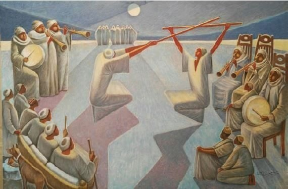
عمل جمال الموجي، في الدورة الـ 40 للمعرض العام - المصدر: كتالوج المعرض العام
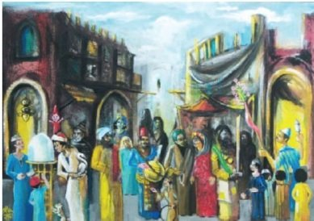
عمل للفنان الراحل محمد صبري، 1981
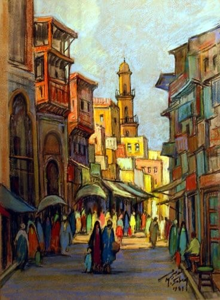
عمل عاطف الشافعي العناني، في الدورة الـ 40 للمعرض العام - المصدر: كتالوج المعرض العام
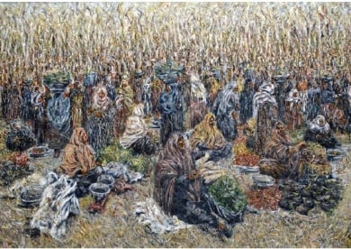
عمل جمع الذرة، للفنانة الراحلة إنجي أفلاطون، 1972 - المصدر: قطاع الفنون التشكيلية
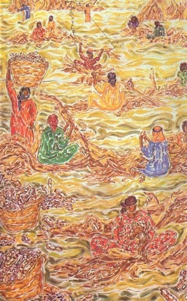
عمل لعمر عبد الظاهر، في الدورة الـ 40 للمعرض العام - المصدر: كتالوج المعرض العام
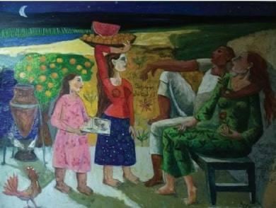
عمل للفنان الراحل الهادي الجزار - المصدر: قطاع الفنون التشكيلية
ولكن رغم عدم وجود أي سبب مقنع بعيدًا عن الرغبة في تقديم الأعمال «بشكل متحفي»، إلا أن اللافت أن المعروضات أو أغلبها بدا وكأنه إعادة تدوير لأعمال المتحف بشكل أو بآخر، بدون علاقة جدلية بينهما، فظهرت أعمال المعرض مرات كنسخ باهتة، ومرات أخرى كمهزلة، وتبقى القلة القليلة هي التي تجاوزت أفكار وأساليب الماضي. تطالعنا أعمال الفنانين المكرّمين في هذه الدورة من المعرض: محمد صبري، نعيمة الشيشيني، محمد طه حسين، محمد القباني، حمدي جبر (خاصة أعمال الفنان محمد صبري)، في أول دور ويصبح ذلك مفتاح فهم المعرض.
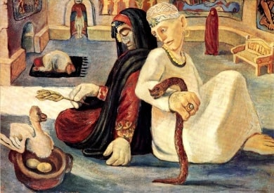
عمل لأحمد عبد الجواد، في الدورة الـ 40 للمعرض العام - المصدر: كتالوج المعرض العام
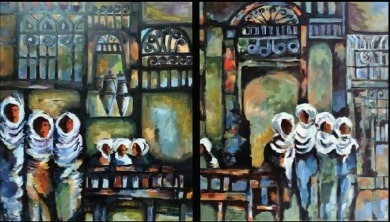
عمل للفنان الراحل محمد صبري، 1946 - المصدر: قطاع الفنون التشكيلية
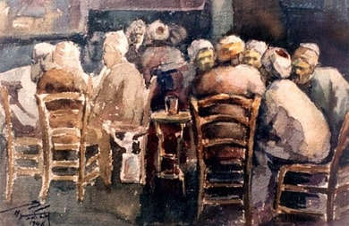
عمل لإلهام سعد الله، في الدورة الـ 40 للمعرض العام - المصدر: كتالوج المعرض العام
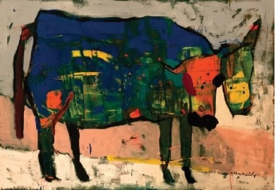
عمل للفنان الراحل محمد صبري، 1946 - المصدر: قطاع الفنون التشكيلية
فما شَغَل الفنانين من الجيل الأول والثاني والثالث من الحركة التشكيلية في مصر على مدى قرن من الزمن مازال كما هو. على الأقل في سياق قطاع الفنون التشكيلية والفنانين المرتبطين به. فلا يسعنا إلا أن نتساءل لأن ما شَغَل محمود مختار أو عبد الهادي الجزار أو حتى إنجي أفلاطون لا يمكن أن تكون نفس الأسئلة، ولا يمكن أن تكون لدينا نفس «الإجابات»، أو النتائج. يبدو للمُشاهد أن الأعمال الفنية وكأنما توقَّف عندها الزمن، فمازلنا نرسم منظر السوق (جمال الموجي)، أو القهوة (أحمد عبد الجواد)، أو حتى منظر الحصاد (عاطف الشافعي العناني)، دون أي مساءلة عن تغيّرات طرأت على الاقتصاد المصري منذ بداية القرن العشرين، أو عن طبيعة مرتادي القهوة الآن، أو حتى ما آلت إليه الزراعة المصرية بعد الاستقلال (تشييد السد وما ترتّب على ذلك من تغيير لطبيعة التربة، وانتشار أحزمة الحضر في المناطق الزراعية والجفاف الذي قضى على مواسم المحاصيل التقليدية،…إلخ قارن على سبيل المثال عمل «أسونثيون مولينوس جوردو»، «الزراعة الشبح» (2018) في معرض «مغمر» في مركز الصورة المعاصرة عن التغيرات التي طرأت على النشاط الزراعي في الدلتا منذ الثمانينيات).
«يعد المعرض العام الأربعين، من أهم الأحداث التشكيلية للفن المصري، خصوصًا أنه يأتي بعد نضوج تجارب وأيضًا نتاج تجارب الفنانين وفلسفتهم، كما يعد هذا الحدث الكبير هو الأبرز والأكثر إشكالية.. على المحيط العام.
فهو يمثل خلاصة وتشخيص لما وصل إليه الفن التشكيلي المصري في عام وبامتداد تجاربه السابقة. من هنا تأتي أهمية المعرض العام وتأخذ بعدًا يرجع بتاريخه إلى 39 دورة ماضية.. ولذا حرصت أن يأخذ بعدًا وطابعًا خاصًا وألا يكون تكرار للسابق» –طه القرني، قوميسير المعرض العام 40
يصعب فهم أو استيعاب كلمة قوميسر المعرض العام في ظل ذلك التكرار وإعادة التدوير الذي يبدو أنه لا نهائي، لأعمال ومواضيع الحركة التشكيلية منذ نشأتها في أواخر القرن التاسع عشر. فأين ذلك النضوج أو كيف تفادى المعرض ما بالفعل تم تقديمه فيما سبق؟ ما الذي يعنيه أن نرسم بورتريه لبقرة أو لمشهد الحصاد الآن؟ هل هذا نقد لتدهور الثروة الزراعية في مصر؟ هل هذا توثيق لحالة المزارعين البائسة؟ أو مجرد إعادة تدوير لأعمال فنية تمّ ركنها في مخازن المتحف أو عرضها في زوايا المتحف تلتقط الأتربة؟
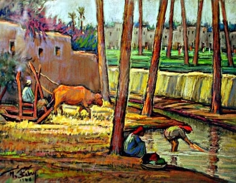
عمل ليونس حسن يونس، في الدورة الـ 40 للمعرض العام - المصدر: كتالوج المعرض العام
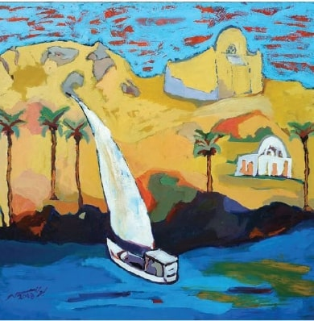
عمل للفنان الراحل محمد صبري - المصدر: قطاع الفنون التشكيلية
وبعيدًا عن تكرار نفس المشاهد، فإن من الملفت للنظر في المعرض هو التمثيل النسائي لعدد غير قليل من الأعمال المعروضة. ولستُ من هواة نظام الكوتة وفرض نسبة من التمثيل النسائي لمجرد تحقيق هدف سياسي، فما أقبح هذا في سياق الفن، ولكن يفرض غياب الفنانات التشكيليات أسئلة كثيرة عن مدى حرية النساء في الدراسة والانخراط في مؤسسات واقتصاديات الفن.
وفي سياق الدورة الحالية من المعرض العام، كان هناك تمثيل نسائي، ولكن يبدو أن نوع هذا التمثيل النسائي كان محاولة للمساومة بين الموقفين. فهناك عدد غير قليل من الفنانات التشكيليات اللاتي عرضن أعمالهن في المعرض، إلا أن موضوعات العمل تطرح أسئلة عديدة ومعقدة عما تعنيه مثل تلك الأعمال. فكانت أغلبها بورتريهات حالمة (أحلام فكري، أميرة عادل، سالي الزيني، أميرة أحمد عبد الوهاب)، وأخرى سيريالية (أسماء الدسوقي، مروة عزت عبد الحميد، نجاة فاروق، منى مصطفى عليوة)، أو أعمال شديدة الغرابة مثل عمل كرل إيلي حمصي، فلا نفهم لماذا تكون رمز مصر فتاة ذات بشرة بيضاء وعينان ملونتان، وعمل إيناس الصديق، والذي يتماهى مع الأسلوب الواقعي، ولكن يبدو أنه بورتريه لسيدة أجنبية تعيش في بلد آخر غير مصر.
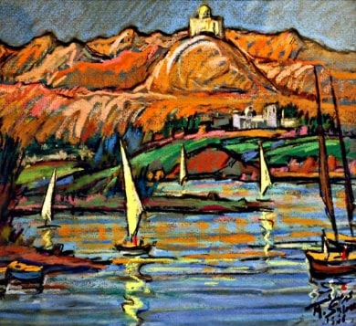
عمل لأحلام فكري، في الدورة الـ 40 للمعرض العام - المصدر: كتالوج المعرض العام
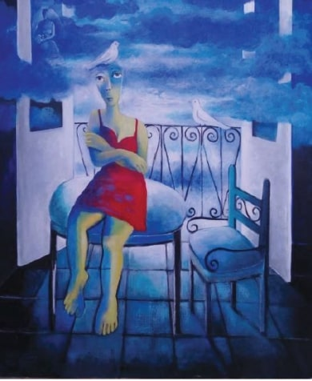
عمل لأميرة عادل، في الدورة الـ 40 للمعرض العام - المصدر: كتالوج المعرض العام
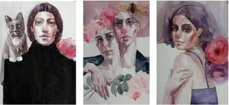
عمل لسالي الزيني، في الدورة الـ 40 للمعرض العام - المصدر: كتالوج المعرض العام
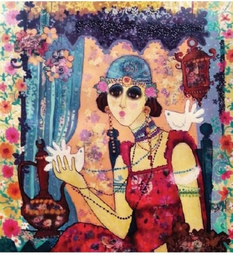
عمل لأميرة أحمد عبد الوهاب، في الدورة الـ 40 للمعرض العام - المصدر: كتالوج المعرض العام
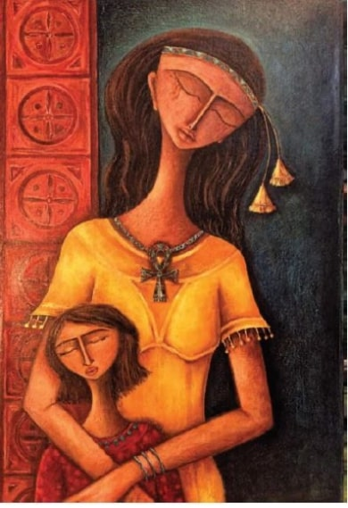
عمل كارل إيلي حمصي، في الدورة الـ 40 للمعرض العام
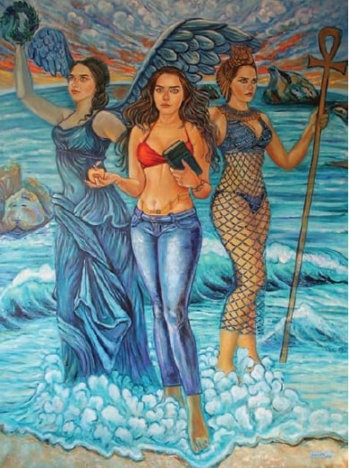
عمل لإيناس الصديق، في الدورة الـ 40 للمعرض العام
فنعود ونسأل أنفسنا هل مارست الفنانات رقابة ذاتية على أنفسهن؟ أم تمّ رفض أعمال أشد واقعية وراديكالية من قِبل اللجنة المنظمة؟ أمقتُ الفن الذي يداهن الصوابية السياسية ولا أعترف أن مهمة الفنان تتمثل في «نقل الواقع» أو معالجته لكن أجد صعوبة بالغة في تصور أن أكثر من ثلاثين فنانة لم تنشغلن بأسئلة أكثر حساسية للسياق المعاصر، في ظل احتدام النقاش عما يتعرّض له النساء في مصر من بخس فاعليتهن، وما يعني هذا في سياقنا، وكم العنف الذي يمارَس، ولا يؤثّر ذلك من قريب أو بعيد على وعيهن أو فنهن.
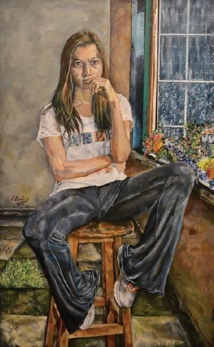
عمل لأسماء الدسوقي، في الدورة الـ 40 للمعرض العام - المصدر: كتالوج المعرض العام
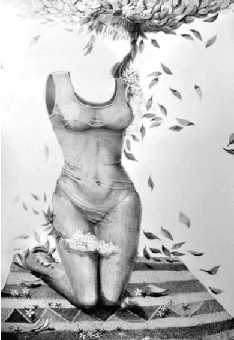
عمل لمروة عزت عبد الحميد، في الدورة الـ 40 للمعرض العام - المصدر: كتالوج المعرض العام
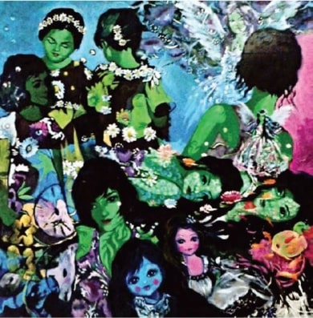
عمل لنجاة فاروق، في الدورة الـ 40 للمعرض العام - المصدر: كتالوج المعرض العام
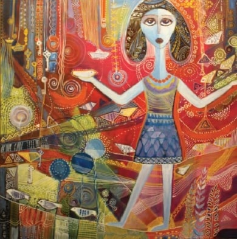
عمل لمنى مصطفى عليوة، في الدورة الـ 40 للمعرض العام - المصدر: كتالوج المعرض العام
تصبح هذه الأسئلة أكثر إلحاحًا إذا نظرنا إلى أعمال أخرى تناقش تلك الأسئلة بشكل أكثر مباشرة -لا يخلو من السذاجة أيضًا، كما في عمل أحمد شبيطة الفوتوغرافي والذي يظهر سلسلة من البورتريهات لشابات تمّ إسقاط مقتطفات من النصوص وكلمات عليهن، تتناول مواضيع بعينها (مثل التحرش، عدم المساواة في الاختيارات العاطفية، عدم المساواة في الحقوق والواجبات،…إلخ). ولا يسعنا ذلك غير أن نسأل لماذا انشغل فنان بتلك الأسئلة للدرجة التي جعلته يصدر سلسلة من البورتريهات ومجموعة من النصوص التي تعبّر عن تلك الإشكاليات ولم تشغل نفس تلك الأسئلة صاحبات الشأن واللاتي يعانين من تلك الإشكاليات بشكل يومي تقريبًا؟ يتراءى للمشاهد كأن أحمد شبيطة يرى ما لا تراه الفنانات الأخريات أو على أسوء ظن، أنها حالة من الـ«mansplaining» (عندما يقوم الرجال بتفسير ظواهر تخص النساء على اعتبار أن الرجال أكثر دراية بالأمور حتى فيما يخص شأن النساء).
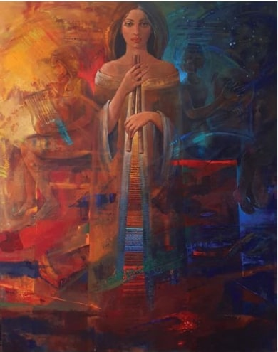
عمل أحمد شبيطة، في الدورة الـ 40 للمعرض العام - المصدر: كتالوج المعرض العام
في ظل هذا، تصبح جدارية نهاد عبد المنعم خضر، وتمثال حربي حسان، أكثر الأعمال راديكالية، والأعمال التي تتجلى فيهما مقولة أن الحياة تحاكي الفن. فيظهر العملان اثنين يقومان بعناق بعضهما البعض، في عمل نهاد عبد المنعم يظهر ذلك بشكل حميمي دون أي مواربة وفي منحوت حربي حسان، يظهر ذلك بكثير من الرقة والدعة، وكأن الحجر استسلم لذلك الدفء والحميمية. ويدفعنا ذلك للتفكير فيما فعلته الدولة لطالبة المنصورة وخطيبها اللذين قررا العناق في مكان عام فكان نصيب كل منهما الطرد حتى تدخَّل شيخ الأزهر لوقف تلك المهزلة. تلك الفوضى داخل الدولة وخطاباتها حول أجسادنا وما نفعله بها يجعل عملي نهاد عبد المنعم وحربي حسان فسحة من السكينة والجمال ويذكّرنا بأننا لا يمكن أن نحيد أجسادنا ورغباتنا مهما حاولت الدولة بقطاعاتها، التشكيلية أو غير التشكيلية، والأحرى أنه يذكّرنا بأن الفن يعطي لنا الفرصة لتخيل حالات ومشاعر قلما ما يُتاح لنا اختبارها أو الشعور بها.
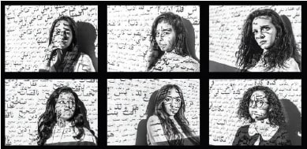
عمل نهاد عبد المنعم خضر، في الدورة الـ 40 للمعرض العام - المصدر: كتالوج المعرض العام
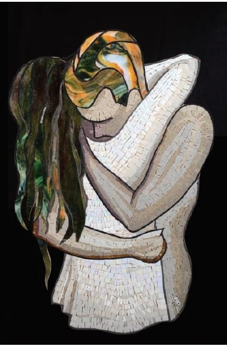
عمل حربي حسان، في الدورة الـ 40 للمعرض العام - المصدر: كتالوج المعرض العام
كانت ثيمة المعرض العام لهذه الدورة هو سؤال الأصالة والمعاصرة، نعم بعد ما يزيد على قرنين من الزمن من طرح هذا السؤال في ظل تصاعد الاستعمار الأوروبي في نهايات القرن الثامن عشر. ويفسر مثل هذا الاختيار تلك الحالة من التكرار وإعادة تدوير ليس فقط مواضيع العمل، ولكن غياب أي حس معاصر للأغلبية الكاسحة من الأعمال المعروضة. ويصبح ثيمة المعرض بحق، هو كيف يمكننا إنتاج ما تمّ إنتاجه في اجترار لا ينتهي دون الالتفات «للمعاصرة» على الإطلاق. يصبح معيار النجاح هنا ليس فهم واستيعاب الماضي كقوة تشكل ما ندركه من الحاضر، ولكن يصبح معيار النجاح هو إعادة إنتاج الماضي كما هو في محاولة لتفادي أسئلة الحاضر الأكثر صعوبة والأكثر تعقيدًا. ويصبح الرد على سؤال الأصالة والمعاصرة هو مائة عام من رسم المشهد نفسه.